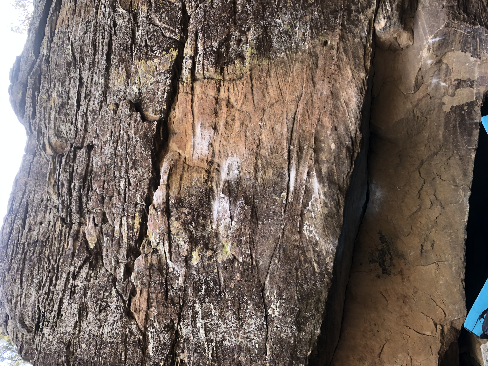

Why I Enjoy Climbing
Climbing gives me the chance to improve my strength, balance, and focus. I enjoy both indoor and outdoor climbing because each one brings a different kind of challenge. Outdoor climbing means a lot to me because that is where it all started, climbing outside with my dad. Even though I do not get outside to climb as often as I would like, it has become an important part of my year. It gives me a chance to feel free and step away from the mouse and keyboard.
Types of Climbing Ranked By Me
- #1 Bouldering
- #2 Sport climbing
- #3 Traditional climbing
My Favorite Part
My favorite part of climbing is the feeling of finally completing a route after working on it for a long time. It is rewarding to see progress and overcome something difficult.
Climbing In The Wild


Learn More About My Climbing Progression
See my My Mountain Project page to learn more about my completed climbs and progress.